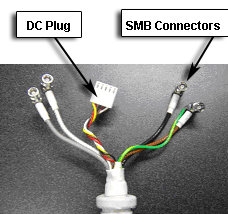
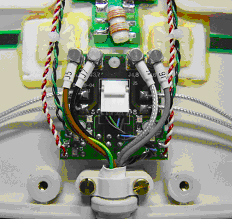

Operating Documentation
Direction 5500113, Rev# 3
Discovery MR750 3.0T Service Methods
Module Version 2.0, Version Date 6/18/09
Operating Documentation |
| Required Persons | Preliminary Reqs | Procedure | Finalization |
|---|---|---|---|
| 1 | Not Applicable | 30 mins | Not Applicable |
Follow this process to replace the cable assembly on the 3.0T HD 8CH Cardiac Coil by GE/USAI
| Last Update | March 8, 2006 |
| Item | Qty | Effectivity | Part# | Manufacturer | |
|---|---|---|---|---|---|
| Standard Tool Kit | 1 | - | - | - | |
| Item | Qty | Effectivity | Part# | Manufacturer | |
|---|---|---|---|---|---|
| GE 3.0T HD 8CH Cardiac System Cable | 1 | - | 2414707 | - | |
| GE 3.0T HD 8CH Cardiac System Anterior Coil Assembly | 1 | - | 2414706 | - | |
| GE 3.0T HD 8CH Cardiac System Posterior Coil Assembly | 1 | - | 2414706 | - | |
Remove anterior coil cover.
Remove the two screws that hold down the cable clamp assembly.
Disconnect SMB plug and the DC Plug on the anterior coil cable end from the anterior interface board. See Illustration 1.
Illustration 1: Anterior Cable Assembly

Remove the old anterior cable assembly. See Illustration 2.
Illustration 2: Anterior DC Plug Assembly

Fix the anterior cable section of a new coil cable assembly on the anterior section of the coil and reattach the cable clamp with the two screws. Connect all four SMB plugs and the DC Plug to the corresponding receptacles on the interface board. See Illustration 3.
Illustration 3: Anterior SMB Connector Assembly

Close the anterior coil cover.
Remove posterior coil cover.
Remove the two screws that hold down the cable clamp assembly. See Illustration 4.
Illustration 4: Posterior SMB Connector Assembly

Disconnect SMB plug and the DC Plug on the posterior cable end from the posterior interface board. See Illustration 5.
Illustration 5: Posterior Cable Assembly

Remove the old posterior cable assembly. See Illustration 6.
Illustration 6: Posterior SMB Connector Assembly
Fix the posterior section of a new coil cable assembly on the posterior section of the coil and reattach the cable clamp with two screws. Connect all four SMB plugs and the DC Plug to the corresponding receptacles on the interface board. See Illustration 6 and Illustration 7.
Illustration 7: Posterior DC Plug Assembly

Close the posterior coil cover.
Remove anterior coil cover.
Remove the two screws that hold down the cable clamp assembly. See Illustration 3.
Disconnect SMB plug and the DC Plug on the anterior coil cable end from the anterior interface board. See Illustration 1.
Remove the old anterior coil assembly.
Fix the anterior coil cable on a new anterior coil assembly and reattach the cable clamp with the two screws. Connect all four SMB plugs and the DC Plug to the corresponding receptacles on the interface board. See Illustration 3.
Remove posterior coil cover.
Remove the two screws that hold down the cable clamp assembly. See Illustration 4.
Disconnect SMB plug and the DC Plug on the posterior coil cable end from the posterior interface board. See Illustration 6.
Remove the old posterior coil assembly.
Fix the posterior coil cable on a new posterior coil assembly and reattach the cable clamp with the two screws. Connect all four SMB plugs and the DC Plug to the corresponding receptacles on the interface board. See Illustration 6.
Close the posterior coil cover.
No finalization steps.